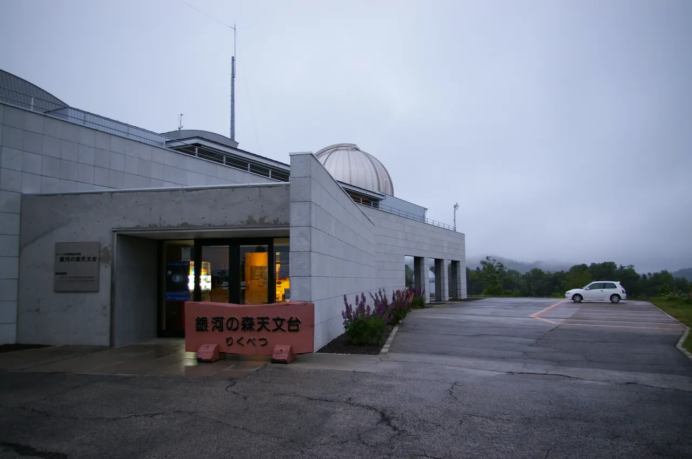
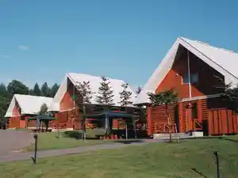
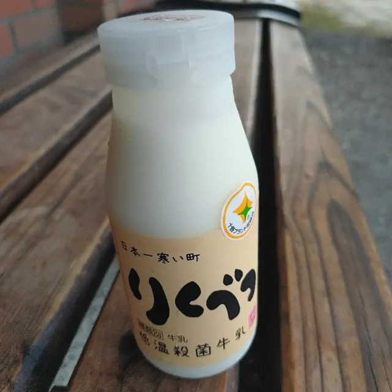
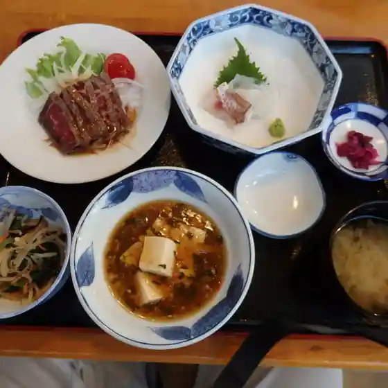
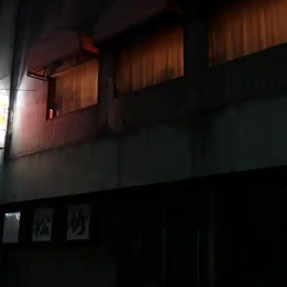
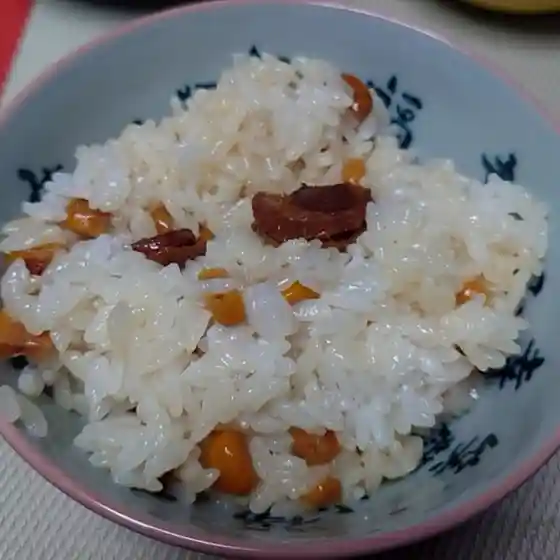
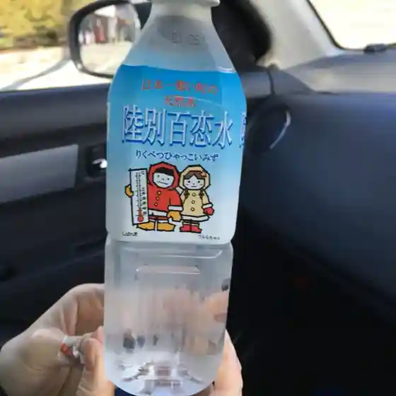
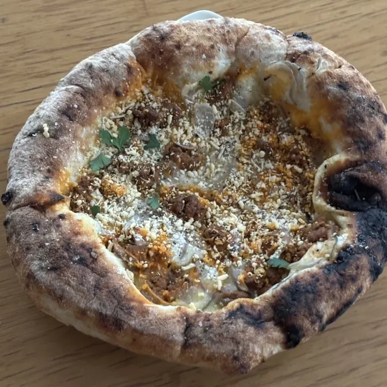
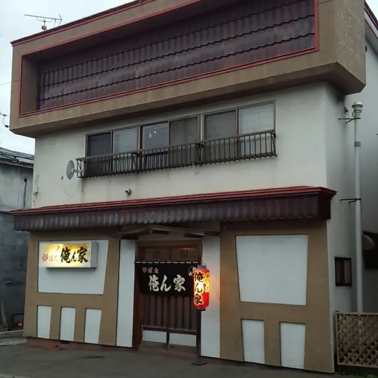

Rikubetsu
Rikubetsu · Hokkaido
Rikubetsu
Highlighted on the Hokkaido map.

Stay
銀河の森コテージ村

Ginga No Mori Koteeji Mura
Dining
道の駅りくべつ ソフトクリーム工房Ⅱ

Michi No Eki Rikubetsu Sofutokuriimu Koubou Ⅱ
オーロラハウス

Oororahausu
Maison Chou Chou
Maison Chou Chou
ヒロ

Hiro
浜田旅館

Hamada Ryokan
セイコーマート 陸別店

Seikoomaato Rikubetsu Mise
Atelier Polaris

Atelier Polaris
俺ん家

Ore N Ie
セレモ浜田
Seremo Hamada
ゲゼレ工房 北勝光生会 みどりの園
Gezere Koubou Kita Katsumitsu Nama Kai Midorino Sono
オーロラタウン93りくべつ 観光・物産館
Oororataun 93 Rikubetsu Kankou Bussan Kan
大谷牛乳販売店
Ootani Gyuunyuu Hanbaiten
ぷらっとカフェ
Puratto Kafe
エーコープ りくべつ店
Eekoopu Rikubetsu Mise
秦食堂
Shin Shokudou
ダイニングバー アールズ
Dainingubaa Aaruzu
すし藤
Sushi Fuji
森田屋
Moritaya
本田商店
Honda Shouten
居酒屋花むすび
Izakaya Hana Musubi